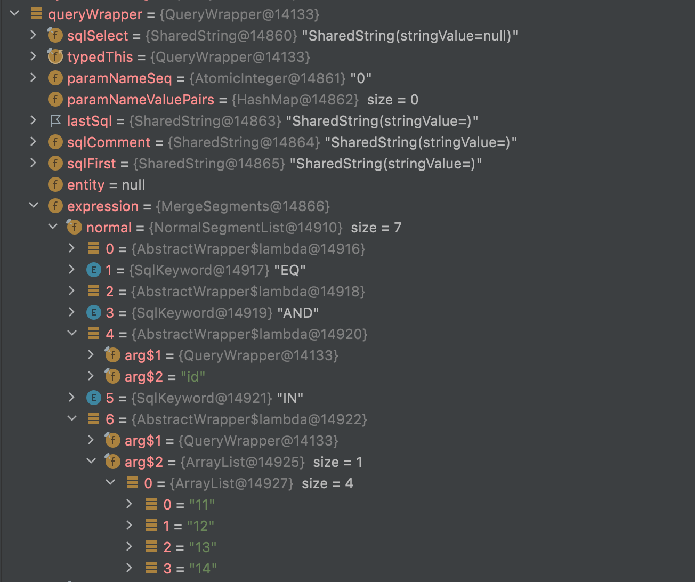
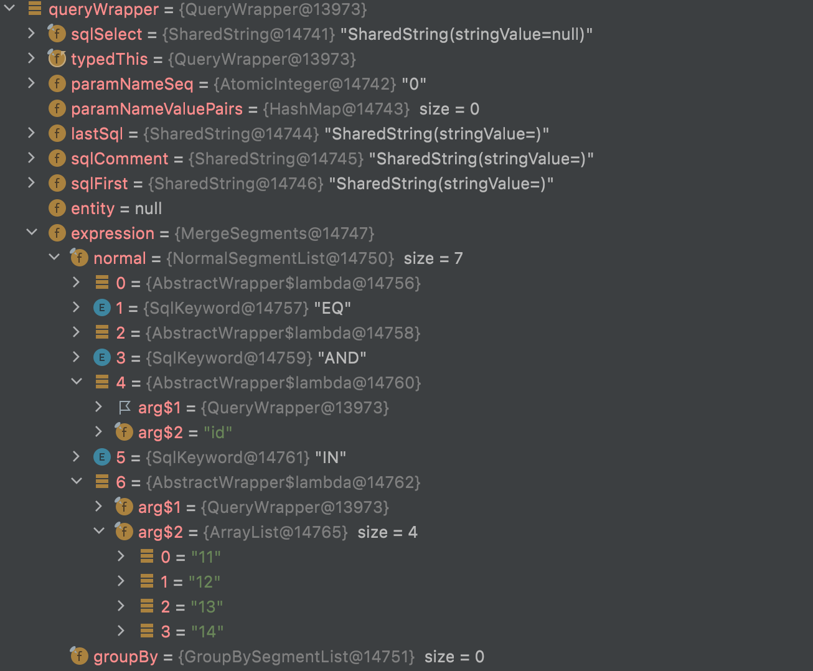

文档
学习工作记录文档，包括学习总结和工作中遇到的问题记录。
学习记录
Git
Docker
问题记录
CI/CD
DIND（docker in docker）
描述：编写集成测试，需要用到spicedb，通过代码的dockertest启动一个docker spicedb容器，通过grpc连接spicedb容器向其中添加数据做测试，gitlab-ci的test报错历史
Could not start resource: : dial unix /var/run/docker.sock: connect: no such file or directory
原因：gitlab-ci中的镜象是golang，所以启动后runner-test内部只有golang的环境，并且宿主机启动runner的配置中也没有挂载docker.sock，导致内部无法访问外部的docker 修改：将gitlab-ci中的镜象改成docker镜象，同时添加service: docker-dind
/bin/bash: line 115: docker: command not found
原因：把test-coverage中的image删掉了 修改：把test-coverage中的image加上，并且使用的是docker:19.03.13
ERROR: error during connect: Get http://docker:2375/v1.40/info: dial tcp: lookup docker on 100.100.2.136:53: no such host
原因：由于没有给docker配置相应的docker主机 修改：给docker添加相应的主机，在service中添加： services name: docker:19.03.12-dind alias: dockerhost 在gitlab-ci中添加： variables: DOCKER_HOST: tcp://dockerhost:2375/
ERROR: Cannot connect to the Docker daemon at tcp://dockerhost:2375/. Is the docker daemon running?
原因：由于我们使用的是docker官方的docker：dind镜像，该镜像在18.09+下做了变化，主要是TLS证书认证这块。gitlab没有适配这个变化 修改：gitlab-ci.yml文件里面添加一下配置： variables: DOCKER_DRIVER: overlay2 DOCKER_TLS_CERTDIR: ""
/bin/sh: eval: line 127: go: not found
原因：命令行中去下载并安装golang，安装后没有生效，这是由于通过docker启动的这个runner-test是一个alpine环境，缺少很多基础依赖 修改：在gitlab-ci.yml中添加脚本安装必需的依赖，脚本命令： apk update && apk add -f --virtual build-essential apk add make apk add gcc apk add musl-dev
uname -c uname: unrecognized option: c
原因：中间通过命令查看runner-test的系统信息，命令不对 修改：使用uname -a，系统信息：Linux runner-vxe1ctwm-project-1555-concurrent-0 4.18.0-147.5.1.el8_1.x86_64 #1 SMP Wed Feb 5 02:00:39 UTC 2020 x86_64 Linux
cgo: exec gcc: exec: "gcc": executable file not found in $PATH
原因：缺少gcc依赖 修改：添加命令apk add gcc下载依赖
Do you want to continue [Y/n]?
原因：安装过程有需要确认的步骤 解决：在 apk add 后加 -f强制执行，不需确认
/bin/sh: eval: line 133: make: not found
原因：缺少make的依赖 解决：添加命令apk add make下载依赖
_cgo_export.c:3:10: fatal error: stdlib.h: No such file or directory 3 | #include
原因：缺少stdlib.h的包 解决：添加以下命令： sed -i 's/dl-cdn.alpinelinux.org/mirrors.aliyun.com/g' /etc/apk/repositories apk update && apk add -f --virtual build-essential
panic: test timed out after 10m0s
原因：由于没有拉取spicedb的镜象，导致启动spicedb超时 解决：添加以下命令： docker pull jauderho/spicedb:v1.1.0
filter_test.go:340: rpc error: code = Unavailable desc = connection error: desc = "transport: Error while dialing dial tcp 127.0.0.1:32768: connect: connection refused" Error: Condition never satisfied Test: TestAuthzed_Filter Messages: could not start test server
原因：使用grpc连接spicedb发现连接被拒绝，是因为代码中用的是loaclhost，而runner-test中的docker主机是我们开始配置的dockerhost 解决：修改代码中的locahost，改为dockerhost，测试通过
总结：使用gitlab-ci的docker in docker要注意内部docker的环境依赖问题以及主机的配置问题
golang-ci.yaml 附件：
# image: golang:1.16.12-alpine3.14
stages: # List of stages for jobs, and their order of execution
- pull-code
- lint-check
- test
- build
- deploy
#pull-code-job:
# stage: pull-code
# before_script:
# - echo "pull code start"
# script:
# - echo "pulling code"
# after_script:
# - echo "pull code end"
services:
- name: docker:19.03.12-dind
alias: dockerhost
variables:
DOCKER_HOST: tcp://dockerhost:2375/
DOCKER_DRIVER: overlay2
DOCKER_TLS_CERTDIR: ""
DOCKER_AUTH_CONFIG: https://hub-mirror.c.163.com
lint-check-job:
stage: lint-check
timeout: 300 seconds
# 仅dev分支和test分支进行lint检查
# image:
# name: golangci/golangci-lint:v1.30.0-alpine
# entrypoint: [ "" ]entrypoint
# only:
# refs:
# - master
# 修改特定目录时触发此job
# changes:
# - /
tags:
- bj-shell
before_script:
- echo "lint tool check source code start"
script:
- echo "lint tool checking"
- go version
- make lint
after_script:
- echo "lint tool check source code end"
artifacts:
reports:
codequality: gl-code-quality-report.json
paths:
- gl-code-quality-report.json
build-job: # This job runs in the build stage, which runs first.
stage: build
before_script:
- echo "Compile the code start"
script:
- echo "compling"
after_script:
- echo "Compile complete."
test-coverage: # This job runs in the test stage.
stage: test # It only starts when the job in the build stage completes successfully.
image:
name: docker:19.03.12
tags:
- bj-docker
timeout: 3600 seconds
before_script:
- docker info
script:
- echo "prepare golang environment..."
- wget https://studygolang.com/dl/golang/go1.16.7.linux-amd64.tar.gz && tar -C /usr/local -xzf go1.16.7.linux-amd64.tar.gz
- mkdir /lib64 && ln -s /lib/ld-musl-x86_64.so.1 /lib64/ld-linux-x86-64.so.2
- export PATH=$PATH:/usr/local/go/bin
- export GOPROXY=https://goproxy.cn,direct
- go env -w GOPROXY=https://goproxy.cn
- sed -i 's/dl-cdn.alpinelinux.org/mirrors.aliyun.com/g' /etc/apk/repositories
- apk update && apk add -f --virtual build-essential
- apk add make
- apk add gcc
- apk add musl-dev
- docker pull jauderho/spicedb:v1.1.0
- echo "Running unit tests..."
- export DOCKER_ALIAS=dockerhost
- make cover
#deploy-dev-job: # This job runs in the deploy stage.
## needs:
# stage: deploy # It only runs when *both* jobs in the test stage complete successfully.
# only:
# - dev
# script:
# - echo "Deploying application on dev..."
# - echo "Application successfully deployed."
#deploy-test-job: # This job runs in the deploy stage.
# stage: deploy # It only runs when *both* jobs in the test stage complete successfully.
# only:
# - test
# script:
# - echo "Deploying application on test..."
# - echo "Application successfully deployed."
#deploy-pro-job: # This job runs in the deploy stage.
# stage: deploy # It only runs when *both* jobs in the test stage complete successfully.
# only:
# - main
# script:
# - echo "Deploying application on prod..."
# - echo "Application successfully deployed."
其他
mybatis-plus in condition
问题描述：在mybatis-plus中使用in条件过滤数据，发现in条件失效
编码及日志：queryWrapper.in("id", queryResult.getList().isEmpty() ? "" : queryResult.getList());
2022-04-09 17:46:31 DEBUG c.zhigui.cube.mapper.auto.SysMenuMapper.selectList >>> ==> Preparing: SELECT id,name,definition,i18n,type,url,parent_id,desc_no FROM sys_menu WHERE (type = ? AND id IN (?))
2022-04-09 17:46:31 DEBUG c.zhigui.cube.mapper.auto.SysMenuMapper.selectList >>> ==> Parameters: PLAT(String), [11, 12, 13, 14](ArrayList)
2022-04-09 17:46:31 DEBUG c.zhigui.cube.mapper.auto.SysMenuMapper.selectList >>> <== Total: 0
- 查看QueryWrapper的源码，对于in方法的传参支持value...和Collection，并且我这里的参数类型是List，属于Collection集合。带着问题进行了debug，查看queryWrapper的内部拼接，如下图：

参数在arg2中多嵌套了一层，这导致in内参数不能对应，所以无法查到数据。
-
后面查看了一些网上的资料，由于in方法提供了两种方式，如果参数不明确，会导致参数类型无法识别，因为这里我使用的是一个三元表达式。
-
后面修改成：queryWrapper.in("id", queryResult.getList()); 再次debug，查看queryWrapper的内部拼接，如下图：

参数位置变正常，数据也能查询出来。
日志：
2022-04-09 18:09:21 DEBUG c.zhigui.cube.mapper.auto.SysMenuMapper.selectList >>> ==> Preparing: SELECT id,name,definition,i18n,type,url,parent_id,desc_no FROM sys_menu WHERE (type = ? AND id IN (?,?,?,?))
2022-04-09 18:09:21 DEBUG c.zhigui.cube.mapper.auto.SysMenuMapper.selectList >>> ==> Parameters: PLAT(String), 11(String), 12(String), 13(String), 14(String)
2022-04-09 18:09:21 DEBUG c.zhigui.cube.mapper.auto.SysMenuMapper.selectList >>> <== Total: 4
- 疑惑
官网中in方法的介绍中提到：如果集合为 empty 则不会进行 sql 拼接，
不太明白这里的sql拼接是指in的sql拼接还是里面的内容不做拼接，测试的实际情况是还会有in条件，in条件后面的括号中没有任何值。个人觉得这里是否不太妥当，如果不去手动判断集合空做特殊处理，这里是会报错的。
- 总结
多思考多看源码多实践。